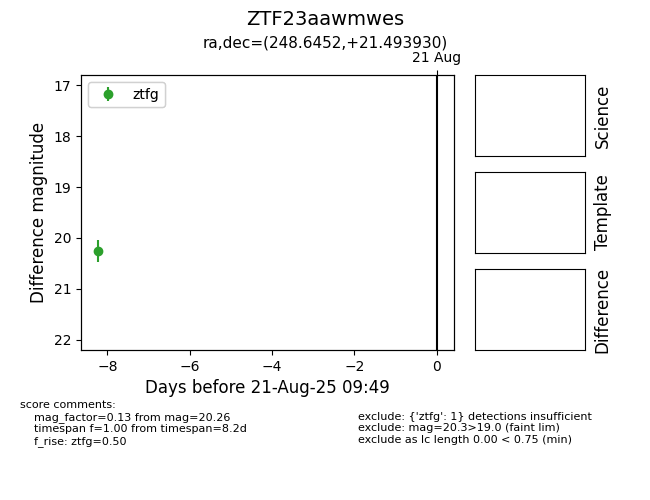

Target ZTF23aawmwes at 2025-08-21 09:49, see:
FINK: fink-portal.org/ZTF23aawmwes
Lasair: lasair-ztf.lsst.ac.uk/objects/ZTF23aawmwes
ALeRCE: alerce.online/object/ZTF23aawmwes
alt names
ZTF23aawmwes (ztf,alerce)
coordinates:
equatorial (ra, dec) = (248.6452,+21.49393)
galactic (l, b) = (39.4219,+39.24978)
photometry
last ztfg=20.26
1 ztfg detections
